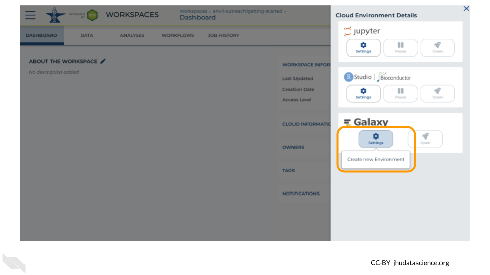
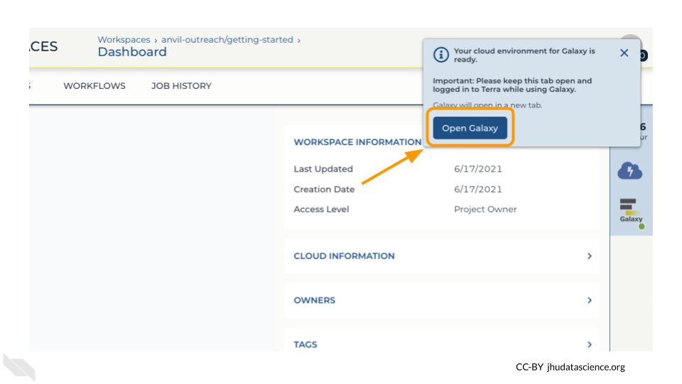

14 Preparation
14.1 Review Key Concepts
This 5-min video provides a high level summary of the exercises to follow. Several important concepts are introduced to provide context for the exercises (slides).
14.2 Clone Workspace
For this demo, you will need your own copy of the SARS-CoV-2-Genome Workspace. These instructions will walk you through cloning a copy of the Workspace.
14.3 Start Cloud Environment
Note that, in order to use Galaxy, you must have access to a Terra Workspace with permission to compute (i.e. you must be a “Writer” or “Owner” of the Workspace).
Open your Workspace, and click on the “Environment configuration” button, a cloud icon on the righthand side of the screen.

Under Galaxy, click on “Create new Environment”. Click on “Next” and “Create” to keep all settings as-is. This will take 8-10 minutes.

Click on “Open Galaxy” when the environment is ready.
